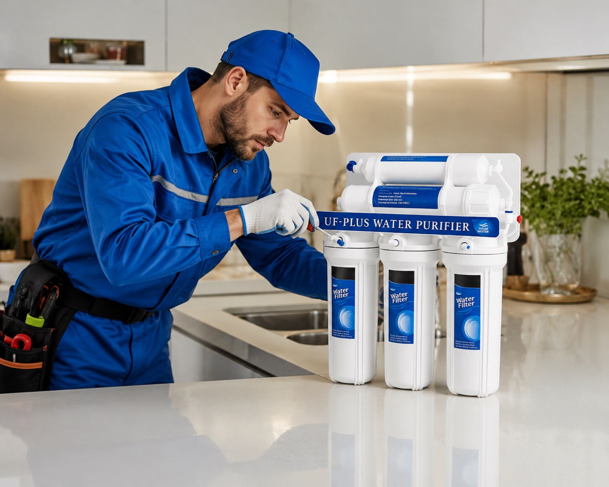

Confianza demostrable
La confianza se construye con respaldo real.
En Water Tech unimos criterio técnico, experiencia, soporte y atención cercana para acompañar proyectos residenciales, comerciales e industriales con mayor seguridad.
- Diagnóstico primero Recomendamos según necesidad real, no por improvisación.
- Respaldo continuo La relación sigue después de la compra con soporte y seguimiento.
- Experiencia comprobada Trayectoria en hogar, comercio e industria con atención responsable.
Respaldo de marca
Ventajas que sostienen la decisión de compra.
Water Tech no solo vende equipos. Aporta criterio técnico, cobertura, experiencia y capacidad de seguimiento para que cada solución funcione de verdad en el tiempo.
- 01 Asesoría responsable Diagnóstico técnico antes de recomendar un equipo.
- 02 Importadores directos Mejor control del portafolio, respaldo y continuidad.
- 03 Más de 10 años de experiencia Trayectoria real en hogar, comercio e industria.
- 04 Cobertura nacional Atención cercana, envíos seguros y soporte postventa.
Mensajes clave
-
Diagnóstico antes de vender
Primero entendemos la necesidad, luego proponemos el equipo correcto.
-
Equipos, repuestos y acompañamiento
La solución incluye respaldo para sostener el rendimiento en el tiempo.
-
Atención cercana
Presencia local en Quito y Santo Domingo con seguimiento responsable.
-
Asesoría técnica
Cada recomendación se sustenta en necesidad real, capacidad, uso y calidad de agua.
-
Soporte postventa
La relación con el cliente continúa después de la compra con mantenimiento y seguimiento.
-
Portafolio escalable
La empresa puede acompañar desde soluciones de hogar hasta requerimientos industriales.
Ventajas